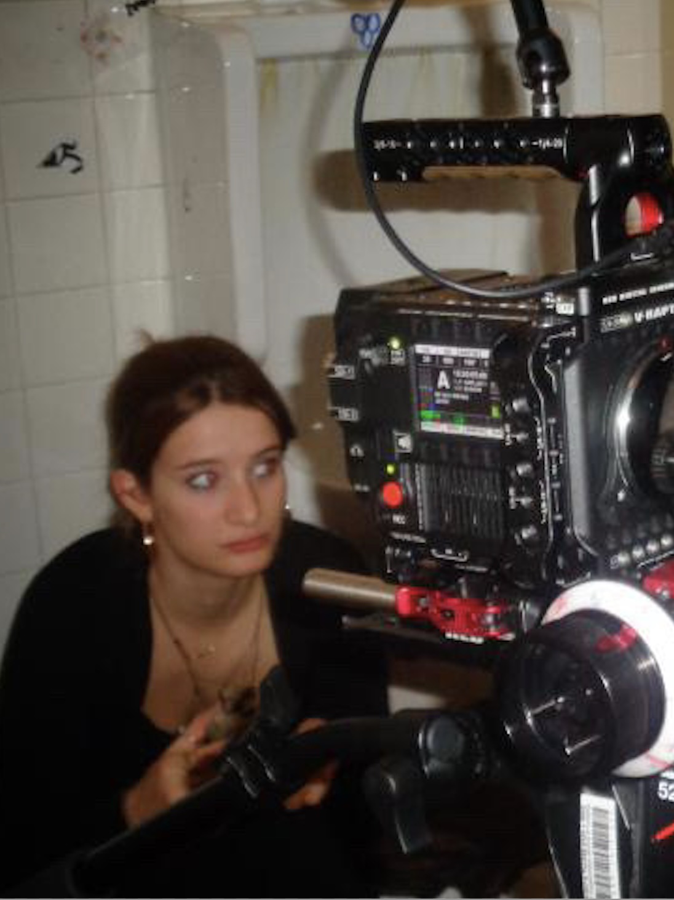
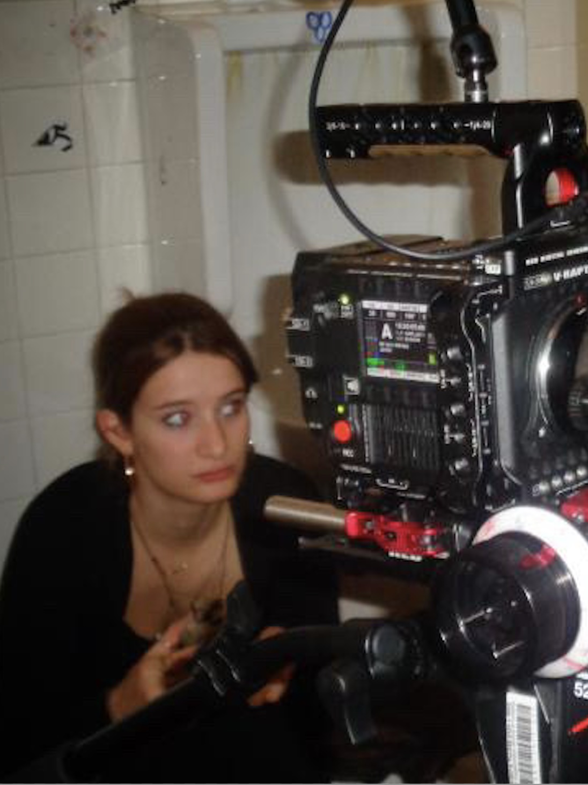

About Me
Hello! I'm Zoé Navarro, a young cinematographer based in Montreal.


 

Now located in Montreal, i grew up in France, in a little village of the Alps.
There, i studied cinema for 3 years in my "audiovisuel" section in high school.
While mostly studying how to create an image and how to write a scenario, i also tried relentlessly
to make it as an actress ! Living in a village where i could count more sheeps than residents,
you can imagine that it wasn't the easiest ! But i made it in the picture "28 degrès sous la lune"
by Noé Mercklé in 2023, a month before taking the plane to montreal ! I am now in my 3rd year of a
Bachelor in "Film Production" in the Mel Hoppenheim school of cinema at Concordia University.
During those years, i have reinforced my knowledge in theorical aspects, such as the study of images
and the history of films, as well as in practical aspects, thanks to the many films sets and productions
that i was apart of (notably with the film "Between the silence and the noise" that was screened at the TPFF in Toronto).
My goal now is to gain even more experience in this beautiful and florishing industry that is the cinéma Québécois !
I would love to hear from you and it would be a pleasure to work along your side.
Please feel free to write to me in my "contact" section and i will be back to you shortly.
Looking forward to creating magic through our lenses :)
Projects
Discover some of the key abilities that shape my cinematic and creative work.
Skills


Contact
Production Manager
Production manager on the short film: "Between the Silence and the Noise", by Sara Balkis - @2025
On this beautiful project i was in charge of :
- Budget management
- obtaining funds
- applying and creating a file for grants and bursaries (2.4k obtained)
- creating a production book
- managing transportation of the crew and talents
- managing the auditions
- creating talent contracts
- obtaining authorisation for the filming locations
- creating production reports
- managing the extras
- managing the meals
- advertising on social medias/networks
- being a distribution coordinator in Festival (screened at the TPFF festival in Toronto @2025)
- being a mediator between the team members

Script
Script on the short film: "Biscuit Chinois", by Justin Genest - @2025
Assistant Camera
Assistant Camera on the short film: "Affaire Sabrina Baptiste", by Emily Badet - @2025
Art Director
Art director on the short film: "Dark Horse", by Rayane Benzida - @2025
Assistant Art Director
Assistant Art Director on the short film: "Street Boy", by François Dubé - @2024
Director
Director of the short films "Memento Vivere", "How it Feels", and "Heal and Rise".
Actress
Lead roles in "28 degrés sous la lune", "We Were Girls Together", and more.
Foley Artist
Foley Artist on "Between the Silence and the Noise" - @2025
Assistant Director
Assistant Director on a studio light project - @2024
Production Coordinator
Production Coordinator on a historic fiction - by Célèste Forette - @2025
Location Scouting
Scenarist-Writer
Scenarist-Writer on multiple short fiction films - @2023/2025